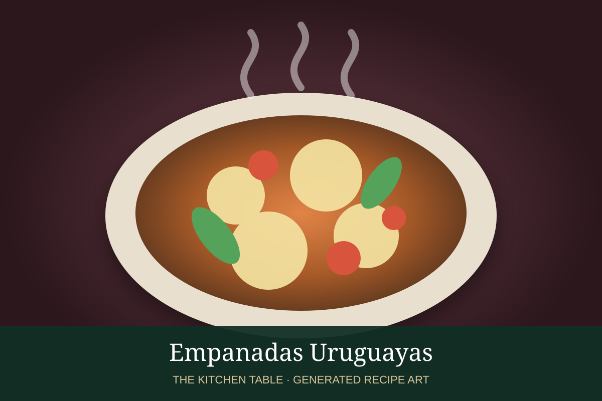

← Back to all recipes
MEAT · URUGUAYAN
Empanadas Uruguayas
Baked Uruguayan beef empanadas with onion, egg, olives, warm spices, and optional raisins.
1 hr 30 minMakes 12

Photo: RecetasGratis
Ingredients
- 12 empanada dough discs
- 1 lb ground beef
- 1 large onion, finely chopped
- 1/2 red bell pepper, finely chopped
- 2 hard-boiled eggs, chopped
- 1/3 cup green olives, chopped
- 2 tbsp raisins, optional
- 1 tsp sweet paprika
- 1/2 tsp ground cumin
- 1/2 tsp dried oregano
- Salt and black pepper
- 1 egg beaten with 1 tbsp water, for brushing
Preparation
- Cook onion and bell pepper in a little oil until soft. Add beef and cook until just browned.
- Season with paprika, cumin, oregano, salt, and pepper. Stir in olives, chopped egg, and raisins if using. Cool the filling completely.
- Heat the oven to 400°F and line a baking sheet.
- Place a spoonful of filling in the center of each dough disc. Fold over, seal firmly, and crimp or pleat the edges.
- Arrange on the baking sheet and brush with egg wash.
- Bake 18 to 22 minutes, until deeply golden. Rest a few minutes before serving.